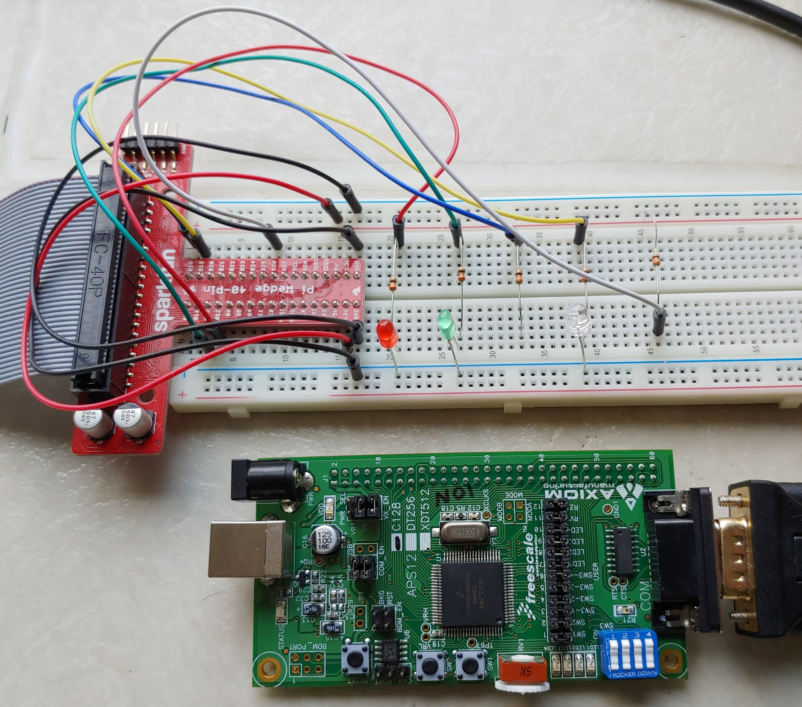
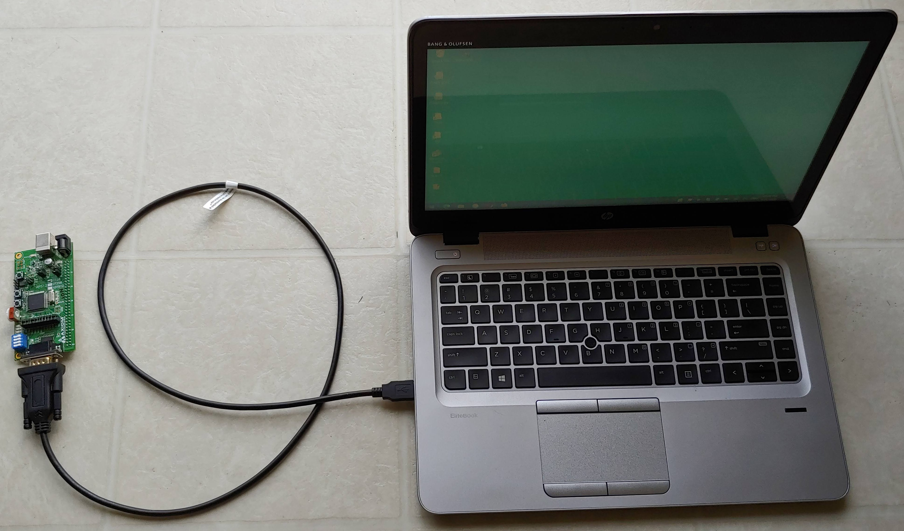

Homework 3
Due: Feb. 10, 2021 11:30pm
Objective
1. Learn simple HC12 assembly program for the parallel port I/O,
subroutine, looping, and timing.
2. Dimming the LED lights using
PWM (Pulse Width Modulation) technique.


Introduction/Background
- Read the textbook (Valvano) Sections for I/O ports.
Also read the MC9S12C128 CPU Reference Manual and the MC9S12C chip
Data Sheet. Again, you do NOT need to understand
all of them at this time.
- This Semester, we are using ONLY the CodeWarrior Debugger/Simulator to
show the hardware and program workings. For the grading of all homework
during this Semester, we will be testing your program on the CodeWarrior
simulator only.
- If your program works on the simulator, it will be working on the
actual board, in most cases. However, there are very few differences
between the CodeWarrior simulator and the actual CSM-12C128 board.
The only one major difference between running your program on the
CodeWarrior simulator and running your program on the actual
CSM-12C128 board is timing. Running your program on the
CodeWarrior simulator is about 100 times slower than running your
program on the actual CSM-12C128 board.
- If you correctly complete your Homework 3 program
and running it on the CodeWarrior simulator, you will see
the fast blinking LED on the simulator Visualization Tool window.
And you will notice the duty cycle of an LED ON/OFF ratio change.
However, when you run your Homework 3 program on the actual CSM-12C128
board, you will see the real LED dimmed - it is blinking at least
100 times faster than the simulator, so that your eyes perceive it
as simply "dimmed" and not bliking.)
- Another words, the dimming the LED light on the actual
CSM-12C128 board means fast blinking LED on the simulator
Visualization Tool window and the duty cycle of the LED ON/OFF
ratio will change.
Instruction Steps
- Please see the
Homework 3 Sample program
and the CodeWarrior Debugger/Simulator setup for LEDs and Switches.
- The next four steps are the experiments and questions
for running your program on the actual board in real time.
They are designed to introduce an important Pulse Width
Modulation (PWM) concept widely used in modern
high definition audio system. Please understand as much as
possible even if we will be programming targeted only for the
CodeWarrior simulator - to blink an LED.
- If you bought the CSM-12C128 board and if you like to to work
with the CSM-12C128 board also for this homework, you must
download the HyperTerminal program (click here)
and install it on your computer. The step by step guide using the
USB-to-Serial cable, installing the HyperTerminal, connecting the
CSM-12C128 board with HyperTerminal is
posted: Guide - USB, HyperTerminal,
and CSM-12C128 board connection. (The USB-to-Serial cable driver
should be auto-installed - it is a part of the MS Windows System - when
you plug in the cable. In case if you have problem, here is the
driver software - click here. )
- To test CSM-12C128 board and your computer connection,
load your Homework 2 program (or the sample Homework 2 program)
to the CSM-12C128 board from your computer and run. Be sure to
check the LED blinking from your Homework 2, correctly operating
on the CSM-12C128 board.
- Suggested experiment: can you change your Homework 2
program to make the LED blinking faster? One can simply reduce
the 'Counter1' and/or 'Counter2' number used for the delay
subroutine. What values of 'Counter1' and 'Counter2' will cause
you to not see the LED blinking, such that LED lights become steady lit?
- Homework 3 question: What values of 'Counter1' and 'Counter2'
will cause the sample Homework 2 LED blinking 1000 time per
each second?
- Now, check the PWM introduction material:
Introduction to PWM,
Pulse-width modulation,
more intro to PWM, and
Pulse-width modulation on Wikipedia.
- Write the program, 'main.asm', to pulse (dim) the LED lights.
The pulse time resolution must be 100 steps in one second as follows:
Initial state of LED lights:
(0) LED 1 is OFF (0%), LED 3 is OFF (0%), and LED 4 is ON (100%).
SW1 NOT pressed:
(1) LED 2 turn on for 0.21 second, then turn off for 0.79 second, and repeat.
SW1 pressed:
(2) LED 2 turn on for 0.89 second, then turn off for 0.11 second, and repeat.
- Suggested light blinking (pulsing or dimming) algorithm is outlined below:
initialize
mainloop: check sw1
if sw1 not pressed ; 0.21second light ON
set counter ONN=21
set counter OFF=79
turn-on LED 2
loop 21 times (using counter ONN, call delay10msec 21 time)
turn-off LED 2
loop 79 times (using counter OFF, call delay10msec 79 time)
goto mainloop
if sw1 pressed ; 0.89second light ON
set counter ONN=89
set counter OFF=11
turn-on LED 2
loop 89 times (using counter ONN, call delay10msec 89 time)
turn-off LED 2
loop 11 times (using counter OFF, call delay10msec 11 time)
goto mainloop
- You may want to see a sample
Flow Charts of the above algorithm. *Please note that the sample
flow charts show the LED 3 blinking (dimming) but you are require to blink the
LED 2 for this homework.
- The counter variable 'ONN' is the delay count for LED-on time.
The counter variable 'OFF' is the delay count for LED-off time. The sum
of 'ONN' and 'OFF' is always 100.
- The delay subroutine 'delay10msec' will cause 10 msec
delay when called. The LED on-offf cycle will always
take 1 sec (100 * 10 msec). Therefore, this program will
turn on-off the LED light 1 time per second.
- Simply changing 'delay10msec' program (10 msec delay) to
'delay10usec' program (10 usec delay), the program cycles 1000 times faster.
With such high rate of LED on-off cycles, the normal human eyes will
perceive the LED light level of 21% or 89%. One can see this only on
the actual board and not on the CodeWarrior simulator because the
simulation on PC is too slow - one will only see the LED color fast
blinking or flickering on the simulator.
- For the Homework 3 turn-in, be sure to use 10 usec delay
and not the 10 msec delay. Also be sure that
LED 1, LED 3, and LED 4 maintain their initial light level state,
and LED 2 light blinking changes based on the switch SW1 pressing.
- You MUST note that the LED light and switch press behavior
is opposite way on the CSM-12C128 board compare to the CodeWarrior
simulator:
On the CSM-12C128 board:
LDAA %10111111
STAA PORTB ; Turn-On LED3 only
LDAA %0100XXXX
STAA PORTB ; Turn-OFF LED3, Turn-On LED 1, 2, 4
switch SW1 button pressed => PTIP=xxxxxxx0, ANDA=> Z=1
switch SW1 button not pressed => PTIP=xxxxxxx1, ANDA=> Z=0
CodeWarrior simulator/debugger way:
LDAA %01000000
STAA PORTB ; Turn-On LED3 only
LDAA %1011XXXX
STAA PORTB ; Turn-OFF LED3, Turn-On LED 1, 2, 4
switch SW1 button pressed => PORTB=00000001, ANDA=> Z=0
switch SW1 button not pressed => PORTB=00000000, ANDA=> Z=1
(Put LED at PORTB bit 0 and set it as an output in order to
press the LED as a switch.)
- Design the program to start at $3100 and data to start at $3000.
- Be sure to put much comments so that grader and others can clearly and
quickly understand your program. Comments are very
important in assembly language programs.
- If you set the delay time on the program as minimum, then you can do
single step through the program to check the LED light ON and OFF on the simulation.
Also note that when you change the program source file, you need
to re- Make the main.asm file and restart the debugger.
- The CodeWarrior debugger has many features that help the programmer
in debugging process. For example, I use 'Breakpoint' feature often in
debugging.
- You may want to see and check the
Sample Grading Sheet for this homework. Grading point distribution
is much different than Homework 1 and Homework 2.
-
Copy your 'main.asm' file to 'cmpen472hw3_YourLastName.asm'.
For example, mine will be 'cmpen472hw3_choi.asm' Then submit your
.asm file (do NOT ZIP your file).
-
Turn-in your project source code file through
Penn State CANVAS.
Upload your source code file into the CANVAS Assignment's Homework submission.
Be sure to select CMPEN 472 class and correct Homework number,
and correct file name.
Congratulations on your third CMPEN 472 homework completion!
Epilogue:
Flow chart of the Homework 3 program.
Click here.
Aid for the Homework 3, showing old Homework 2 program
targetted to running on the actual CSM-12C128 board.
Click here. This aid also shows
the accurate program-running/instruction-execution timing
calculation.
This Homework 3 will be re-used for the Homework 4. Please
rewrite it so that only one number LEVEL is required to dim.
That is, generate ONN and OFF numbers from LEVEL.
Moreover, rewrite the Homework 3 program to blink only 15 times.
Your Homework 3 program currently blinks LED 2 forever. Can you
modify it to blink LED 2 only for 15 times, and then turn off
the LED 2 forever?